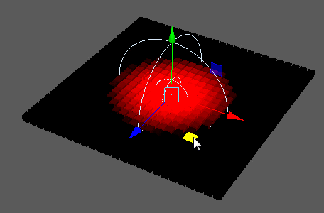

使用衰减形状的输入对象创建并控制衰减体积。
注： 无法通过“Waiter”的“添加节点”(Add Node)字段手动创建衰减节点。但是，可以通过相应节点的“属性编辑器”(Attribute Editor)的“衰减对象”(Falloff Object)区域创建该节点。
衰减对象(Falloff Object)
-
衰减对象(Falloff Object)
- 显示当前用于控制衰减的对象。 您可以在此字段中的空白区域上单击鼠标右键以创建新的衰减对象，或者将衰减对象连接到当前选定的对象。还可以在任意对象上单击鼠标右键以使其显示在“大纲视图”(Outliner)中，断开其连接，“克隆”(Clone)该对象，或者在“视口”(Viewport)中更改其标签/显示颜色。
衰减节点(Falloff Node)
-
反转衰减(Invert Falloff)
- 反转衰减区域的受影响区域。
-
形状(Shape)
- 设置衰减区域的形状。选项包括：
- 球体(Sphere)：从中心到球体的边的渐变。
- 立方体(Cube)：从中心到立方体的边的渐变。
- NURBS 曲线(Nurbs curve)：沿曲线的渐变。
- 粒子(Particles)：由动态粒子的位置定义的渐变。
- 网格(Mesh)：沿自定义网格形状的渐变。
-
模式(Mode)
-
确定衰减方法。选项包括：
- 正常(Normal)：一旦超出衰减区域，受衰减区域影响的对象将恢复正常。
- 添加(Add)：即便是传递衰减区域后，衰减节点的效果依然永久存在。
- 移除(Remove)：移除“添加”(Add)操作的永久效果。
-
内部区域(Inner Zone)
- 衰减区域内衰减达到最大强度的区域。表示为与半径之比。
-
显示颜色(Display Colour)
- 在工作区中自定义衰减对象的颜色。 这也通过已连接节点的“衰减对象”(Falloff Object)标签颜色进行控制。
衰减渐变(Falloff Ramp)
自定义衰减曲线的形状。
其他设置
-
自定义形状半径(Custom Shape Radius)
- 设置相应的“形状”(Shape)模式后，确定输入曲线、粒子或网格周围的衰减区域。
-
组件类型(Component Type)
-
确定从“形状输入”(Shape in)对象采样的组件类型。
-
顶点颜色(Vertex Colours)
- 确定“网格模式”(Mesh Mode)设置为“网格颜色输出”(Mesh Color Out)时按节点输出的颜色。
连接(Connections)
-
形状输入(Shape in)
-
显示当前连接的任何自定义“形状”(Shape)对象（仅当“形状”(Shape)设置为“NURBS 曲线”(NURBS curve)、“粒子”(Particles)或“网格”(Mesh)时才有用）。
-
起始位置(Positions from)
- 显示用于确定实例位置的节点。
-
目标强度(Strength to)
- 显示用于发送节点输出的位置。